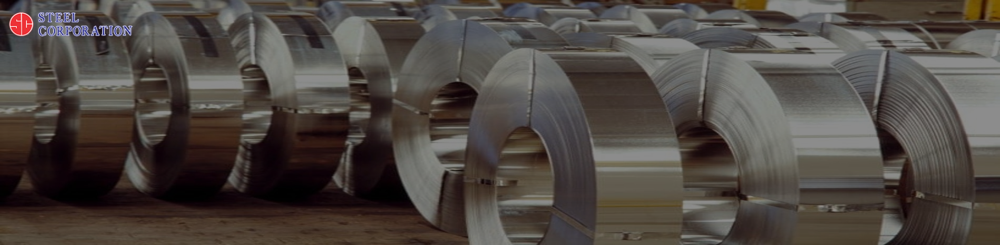

-

-

METALLURGICAL TERMS
Cold Rolled Strip
Cold Rolled Strip is a steel product that is produced from a hot rolled strip that has been pickled. The coil is then reduced by a single stand cold roll steel mill straight away or reversing mill or in a tandem mill consisting of several single stands in a series. The strip is reduced to approximately final thickness by cold-rolling directly, or with the inclusion of an annealing operation at some intermediate thickness to facilitate further cold reduction or to obtain mechanical properties desired in the finished product. High carbon strip steel[3] requires additional annealing and cold reduction operations.[4] The coil is then slit to the desired width through the process of roll slitting.
Spring steel
Spring steel is a name given to a wide range of steels[1] used in the manufacture of springs, prominently in automotive and industrial suspension applications. These steels are generally low-alloy manganese, medium-carbon steel or high-carbon steelwith a very high yield strength. This allows objects made of spring steel to return to their original shape despite significant deflection or twisting
Blue tempered strip
This strip is polished after hardening and tempering and them chemically blued
Acid Brittleness/Hydrogen embrittlement
Brittleness resulting from pickling of steel in acid, hydrogen formed by interaction of iron and acid is absorbed and causes brittleness. Aluminum Killed Steel A Steel where aluminum is used as a deoxidizing agent
Aluminum Killed Steel
A steel where aluminum has been used as a deoxidizing agent. (See killed steel.)
Annealing
A heating and cooling operation implying usually a relatively slow cooling. Annealing is a comprehensive term. The purpose of such a heat treatment may be : to remove stresses; to induce softness; to alter ductility; toughness; electrical magnetic, or other physical properties; to refine the crystalline structure; to remove gases; to produce a definite micro –structure. In annealing, the temperature of the operation and the rate of cooling depend upon the material being heat treated and the purpose of the treatment.
Austenite
Phase in certain steels, characterized as a solid solution, usually of carbon or iron carbide, in the gamma form of iron. Such steels are knows as “austenitic.” Austenite is stable only above 13330 F in a plain carbon steel, but the presence of certain alloying elements, such as nickel and manganese, stabilizes the austenitic form, even at normal temperatures.
Austenite Steel
Steel which, because of the presence of alloying elements, such as manganese nickel, chromium, etc., show stability of Austenite at normal temperatures.
Austempering
Carbon steel is quenched above transformation ranges, in a medium having rate of high abstraction sufficiently high to prevent the transformation of high temperature products and then holding the alloy, until transformation is complete, at a temperature below that of pearlite formations and above that of martensite formation.
Band Saw Steel
(WOOD) – A hardened tempered bright polished high carbon cold rolled spring steel strip produced especially for use in the manufacture of band saws for sawing wood, non ferrous metals, and plastics. Usually carries some nickel and with a Rockwell value of approximately C40/45.
Break Test
(For tempered steel.) A method of testing hardened and tempered high carbon spring steel strip wherein the specimen is held and best across the grain in a vice-like calibrated testing machine. Pressure is applied until the metal fractures at which point a reading is taken and compared with a standard chart of brake limitations for various thickness ranges.
Brinell Hardness
A common standard method of measuring the hardness of certain metals. The smooth surface of the metal is subjected to indentation by a hardened steel ball under pressure or load. The diameter of the resultant indentation, in the metal surface, is measured by a special microscope and the Brinell hardness value read from a chart or calculated by formula.
Brittleness
A tendency to fracture without appreciable deformation.
Burr
A thin ridge or roughness left by a cutting operation such as in metal slitting, shearing, blanking or sawing. This is common to a No.3 slit edge in the case of steel.
Bainite
A slender needle like acicular structure appearing in Spring characterized by toughness and greater ductility then tempered martensite.
Bend test
A test to determine ductility of flat rolled steel strip in which the strip is bent around its axis.
Bonderizing
A coating with a film composed of zinc phosphate in order to develop better surface for further coating.
Camber Or Bow
Edgewise curvature, A lateral departure of a side edge of sheet or strip metal from a straight line.
Carbon
(Chemical symbol c) Element No.6 of the periodic system; atomic weight 12.01; has three allotropic modifications, all non-metallic, Carbon is present in practically all ferrous alloys, and has tremendous effect on the properties of the resultant metal. Carbon is also an essential component of the cemented carbides. Its metallurgical use, in the form of coke, for reduction of oxides, is very extensive.
Carburizing
(Cementation.) Adding carbon to the surface of iron-base alloys by absorption through heating the metal at a temperature belwo its melting point in contact with carbonaceous solids, liquids or gases. The oldest method of case hardening.
Case Hardening
Carburizing and subsequently hardening by suitable heat – treatment, all or part of the surface portions of a piece of iron – base alloy.
Cementite
A compound of iron and carbon known as “Iron carbide,” which has the approximate chemical formula Fe3C containing 6.69% of carbon. Hard and brittle, it is the hard constituent of cast iron, and the normal form in which carbon is present in steel. It is magnetizable, but not as readily as ferrite.
Chromium
(Chemical symbol Cr) Element NO.24 of the periodic system; atomic weight 52.01. It is of bright silvery
color, relatively hard. It is strongly resistant to atmospheric and other oxidation. It is of great value in the
manufacture of Stainless Steel as an iron – base alloy. Chromium plating has also become a large outlet for the
metal. Its principal functions as an alloy in steel making;
1 increases resistance to corrosion and oxidation
2 increases hardenability
3 adds some strength at high temeratures
4 resists abrasion and wear (with high carbon).
Coil set or longitudinal curl
A lengthwise curve or set found in coiled strip metals following its coil pattern. A departure from longitudinal flatness.Can be removed by roller or stretcher leveling from metals in the softer temper ranges.
Coil Breaks
Creases or Ridges appearing in sheets as parallel lines transverse to the direction of rolling and generally extending across the widht of the sheet
Cold Reduced Strip
Metal strip, made from hot - rolled strip, by rolling on cold – reduciton mills.
Dish
A concave surface departing from a straight line edge to edge. Indicates transverse or across the width.
Camber
Edgewise curvature, a lateral deviation of an edge from a straight line. Lateral departure of the edge of the material from straight line forming a chord.
Carbide
A compound of carbon with one or more metallic elements.
Cold rolling
Rolling metal at a temperature below the softening point of metal to create strain hardening. Cold rolling changes the mechanical properties of strip and produces combination of hardness ductility stiffness etc. known as temper.
De-Carburisation
Removal of carbon from outer surface of steel.
Elongation
Increase in length which occurs before a metal is fractured, when subjected to stress. This is usually expressed as a percentage of the original length and is a measure of the ductility of the metal.
Endurance limit
Maximum alternating stress which a given material will with stand for an indefinite number of times without causing fatigue failure.
Grain
A solid polyhedral (or many sided crystal ) consisting of groups of atoms bound together in a regular geometric
pattern. In mill practice grains are usually studied only as they appear in one plane.
1. (Direction of) Refers to grain fiber following the direction of rolling and parallel to edges of strip or
sheets.
2. To bend across the grain is to bend at right angles to the direction of rolling .
3. To bend with the grain is to bend parallel to the direction of rolling. In steel, the ductility in the
direction of rolling is almost twice that at right angles to the direction of rolling.
Grain size
Average diameter of grains in the metal under consideration, or alternatively, the number of grains per unit area. Since increase in grain size is paralleled by lower ductility and impact resistance, the question of general grain size is of great significance. The addition of certain metals set up a grain size standard for steels, and the McQuaid – Ehn Test has been developed as a method of measurement.
Grain boundary
Bounding surface between crystals. When alloys yield new phases (as in cooling), grain boundaries are the preferred location for the appearance of the new phase. Certain deteriorations, such as season cracking and caustic embrittlement, occur almost exclusively at grain boundaries.
Grain growth
An increase in metallic crystal size as annealing temperature is raised; growth occurs by invasion of crystal areas by other crystals.
Hardenability
The ability of a metal, usually steel, to harden in depth as distinguished from the terms “hardness.
Hardened And Tempered Spring Steel
A medium or high carbon quality steel strip which has been subjected to the sequence of heating, quenching and tempering. The two major processes of hardening and tempering can be broken down into four major steps. First, a strip of carbon steel is heated gradually until it reaches a temperature above the alloy's critical temperature. The steel is then quenched, usually in water or oil (though other quenches, such as brine or sodium hydroxide solutions, are sometimes used to achieve a particular result). The steel is now at that given alloy's maximum hardness, but as stated above, also brittle. At this point, tempering is usually performed to achieve a more useful balance of hardness and toughness. The steel is gradually heated until the desired temper colours are drawn, generally at a temperature significantly lower than the alloy's critical temperature. Different colours in the temper spectrum reflect different balances of hardness to toughness, so different temper levels are appropriate for different applications. The steel is then re-quenched to 'fix' the temper at the desired level. A talented smith or metalworker can fine-tune the performance of a steel tool or item to precisely what is required based solely on careful observation of temper colours. A visual representation of this process may make the concept easier to understand.
Hardness
Hardness is
defined as the resistance of material to
local plastic deformation
Achieved from indentation of pre
determined geometric indenter on to a flat
surface of metal under an pre determined
load. Degree to which a metal will resist cutting, abrasion, penetration, bending and stretching. The indicated
hardness of metals will differ some what with the specific apparatus and technique of measuring. For details
concering the various types of apparatus used in measuring hardness. (See Brinell Hardness, Rockwell Hardness,
Vickers Hardness, Scleroscope Hardness.) Tensile Strength also is an indication of hardness.
Heat Treatment
Altering the properties of a metal by subjecting it to a sequence of temperature changes, time of retention at specific temperature and rate of cooling therefrom being as important as the temperature itself. Heat treatment usually markedly affects strength, hardness, ductility, malleability, and similar properties of both metals and their alloys.
Hydrogen Embrittlement
1. Brittleness of metal, resulting from the occlusion of hydrogen usually as a by – product of pickling or by co
– deposition in electroplating.
2. A condition of low ductility resulting from hydrogen absorption and internal pressure developed subsequently.
Electrolytic copper exhibits similar results when exposed to reducing atmosphere at elevated temperatures.
Inclusion
Particles of impurities (usually oxides, sulfides, silicates, etc) that are held mechanically or are formed during the solidification or by subsequent reaction within the solid metal.
Indentation Hardness
The resistance of a material to indentation. This is the usual type of hadness test , in which a pointed or rounded indenter is pressed in to a surface under a substantially static load.
Macrosructure
The structure of metal as revealed by macroscopic examination.
Manganese
(Chemical symbol Mn.) – Element No25 of the periodic system; atomic weight 54.93. Lustrous, reddish – white
metal of hard brittle and, Ferromanganese for steel manufacture as well as in manganese and many copper – base
alloys. Its principal function is as an alloy in steel making:
1. It is ferrite – strengthening and carbide forming element. It increases hardenability inexpensively, with a
tendency toward embrittlement when too high carbon and too high manganese accompany each other.
2. It counteracts brittleness from sulfur.
Martensite
A distinctive needlelike structure exixting in stel as a transition stage in the transformation of austenite. It is the hardest constituent of steel of eutectoid composition. It is produced by rapid cooling from quenching temperature and is the chief constituent of hardened carbon tool stels. Martensite is magnetic.
Mechanical Spring
Any spring produced by cold forming from any material with or without subsequent heat treatment.
Medium - Carbon Steel
Medium-carbon steels are similar to low-carbon steels except that they contain carbon from 0.30% to 0.60% and manganese . Increasing the to approximately 0.5% with an accompanying increase in manganese allows medium-carbon steels to be used in the quenched and tempered condition
Contains from 0.30% to 0.60% carbon and less than 1.00% manganese. May be made by any of the standard processes.
Laminations
A defect appearing in steel strip segregation or layer caused by packets of gas in ingots.
Nickel
(chemical symbol Ni) Element No.28 of the periodic system; atomic weight 58.69. silvery white, slightly magnetic
metal, of medium hardness and high degree of ductility and malleability and resistance to chemical and
atmospheric corrosion; melting point 2651 F; boiling point about 5250 F; specific gravity 8.90. Used for
electroplating. Used as an alloying agent , it is of great importance in iron- base alloys in stainless steels
and in copper-base alloys such as Cupro-Nickel, as well as in nickel – base alloys such as Monel Metal. Its
principal funtions as an alloy in steel making
1. Strengthens unquenched or annealed steels.
2. Toughens pearlitic – feritic steels (especially at low temperature).
3. Renders high – Chromium iron alloys austenitic
Normalizing
A heat treatment applied to steel. Involves heating above the critical range followed by cooling in still air. Is performed to refine the crystal structure and eliminate internal stress.
Oscillated Wound
Amethod of even winding metal strip or wire on to a reel or mandrel wherein the strands are uniformly over-lapped. Sometimes termed “stagger wound” or “vibrated wound.” The opposite of ribbon wound.
Phosphorus
(Chemical symbol P) - Element No.15 of the periodic system; atomic weight 30.98. Non-metallic element occurring in at least three allotropic forms; melting point 1110 F.; boiling point 5360 F.; specific gravity 1.82. In steels it is usually undesirable with limit set in most specifications. However, it is specified as an alloy in steel to prevent the sticking of light-gage sheets; to a degree it strengthens low carbon steel; increases resistance to corrosion, and improves machinability in free-cutting steels. In the manufacture of phosphor Bronze it is used as a deoxidizing agent.
Quenching
In the heat treating of metals, the step of cooling metals rapidly in order to obtain desired properties; most commonly accomplished by immersing the metal in oil or water.
Residual Stress
Macroscopic stresses that are set up within a metal as the result of nonuniform plastic deformation. This deformation may be caused by cold working or by drastic gradients of temperature from quenching or welding
Rockwell Hardness (Test)
A standard method for measuring the hardness of metals. The hardness is expressed as a number related to the depth of residual penetration of a steel ball or diamond cone (“brale”) after a minor load of 10 kilograms has been applied to hold the penetrator in position.This residual penetration is automatically registered on a dial when the major load is removed from the penetrator. Various dial readings combined with different major loads, give “scales” designated by letters varying from “A” to “H”; the “B” and “C” scales are most commonly in use.
Rolling Direction
(In rolled metal) – The direction, in the plane of the sheet, perpendicular to the axes of the rolls during rolling.
Salt Spray Test
An accelerated corrosion test in which the metal specimens are exposed to a fine mist of salt water solution either continuously or intermittently.
Scleroscope Hardness (Test)
A method for measuring the hardness of metals; a diamond pointed hammer drops from a fixed distance through a tube onto the smoothed metal surface and the rebound measured. The scleroscope hardness value is empirically taken from the rebound distance, with a specified high-carbon steel as 100.
Silicon
(Chemical Symbol Si.) - Element No. 14 of the periodic system; atomic weight 28.06. Extremely common element, the major component of all rocks and sands; its chemical reactions, however, are those of a metalloid. Used in matallurgy as a deoxidizing scavenger. Silicon is present, to some extent, in all steels, and is deliberately added to the extent of approximately 4% for electric sheets, extensively used in alternating current magnetic circuits. Silicon cannot be electrodeposited
Silt Edge
The edges of sheet or strip metal resulting from cutting to width by rotary slitters
Slitting
Cutting sheet or strip metal to Width by rotary slitters.
Sorbite
Structure of steel, resulting from the tempering of martensite. In a truly sorbitic structure, the cementite is completely dispersed in the matrix. The trend is to call structure tempered martensite.
Sorbitic Pearlite
Structure of steel resulting, on cooling under the proper condition, from the decomposition of austenite; has a fine, lamellar appearance.
Specific Gravity
A numerical value representing the weight of a given substance as compared with the weight of an equal volume of water, for which the specific gravity is taken as 1.0000
Spectograph
An optical instrument for determining the presence or concentration of minor metallic constituents in a material by indicating the presence and intensity of specific wave length of radiation when the material is thermally or electrically excited.
Spheroidizing
Any process of prolonged heating and slow cooling if steel hich will convert the carbide content into rounded or spheroid from.
Sprink Back
An indicator of elastic stresses, frequently measured as the increase in diameter of a curved strip after removing it from the mandrel about which it was held. The measurement is employed as an indicator of the extent of recovery or relief of residual stresses that has been achieved by the transformation of elastic strain to plastic during heating or stress relieving.
Stress
Deforming force to which a body is subjected, or, the resistance which the body offers to deformation by the force. (See also Strain and Hooke's Law.)
Temper
The state of or condition of a metal as o its hardness or toughness produced by either thermal treatment or heat treatment and quench or thermal treatment or heat treatment and quench or cold working or a combination of same in order to bring the metal to its specified consistency.
Tempering
Tempering is a process of heat treating, which is used to increase the
toughness iron-based alloys. Tempering is usually performed after hardening,
to reduce some of the excess hardness, and is done by heating the metal to
some temperature below the critical point for a certain period of time,
then allowing it to cool in still air. The exact temperature determines
the amount of hardness removed, and depends on both the
specific composition of the alloy and on the desired properties in the
finished product. For instance, very hard tools are often tempered at low temperatures,
while springs are tempered at much higher temperatures.
( Also termed “drawing.”) A process of reheating quench – hardened or normalized steel
to a temperature below the transformation range and then cooling at any rate desired .
The primary purpose of tempering is to impart a degre of plasticity or toughness to
the stel to alleviate the brittleness of its martensite.
Temper Rolling
Subjecting metal sheet or strip to a slight amount of cold rolling following annealling (usually ½ to 1-1/2% ) to forestall stretcher strains. Also termed “Pinch Pass” or “Skin Rolled” (Also See Cold Rolling)
Toughness
Property of resisting fracture or distortion. Usually measured by impact test, high impact values indicating high toughness.
Trace
Extremely small quantity of an element, usually too small to determine quantitatively .
Vanadium
(Chemical Symbol V.) Element No23 of the periodic system; atomic weight 50.95. Gray – White, hard metal,
unaffected by atmospheric influences or alkalles but soluble in most strong acids; melting point 31119 F;
boiling point about 6150 F; specific gravity 5.87 It cannot be electrodeposited. Its principal functions as an
alloy in the making of tool steels
1. Elevates coarsening temperature of austenite (promotes fine grain )
2. Increases hardenability (when dissoved)
3. Resists tempering and causes marked secondary hardening.
Vickers Hardness (Test)
Standard method for measuring the hardness of metals, particularly those with extremely hard surfaces; the surface is subjected to a standard pressure for a standard length of time by means of a pyramid shaped diamond. The diagonal of the resulitng indention is measured under a microsocpe and the Vickers Hardness value read from a conversion table.
Water Hardening
Process of hardening high carbon stels by quenching in water or brine, after heating .
Yield Point
The load per unit of original cross section at which, in soft steel, a marked increase in deformation occurs without increase in load.
Young's Modulus
The coefficient of elasticity of stretching. For a stretched wire, Young’s Modulus is the ratio of the stretching force per unit cross sectional area to the elongation per unit length. The values of Young’s Modulus for metals are of the order 1012 dynes per square cm. (See Modulus of Elasticity.)
Martensite
A distinctive needle like structure existing in steel as on range in transformation of austenite. It is the hardest constituent of steel. A meta stable phase of steel formed by a transformation of austenite below Ms temperature. It is an supersaturated solid solution of carbon in iron having body center tetragonal lattice. Its structure is characterized by a acicular or needle like distinct pattern.
Mechanical spring
Spring produced by cold forming with or without subsequent heat treatment.
Microstructure
The structure of strip specimen as revealed in microscope.
Oil hardening
A process of hardening by heating within or above the transformation range and quenching in oil.
Pearlite
Lamellar structure resembling mother of pearl. A compound of iron and carbon occurring in steel as a result of transformation of austenite into aggregations of ferrite and iron carbide.